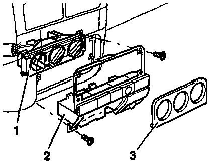

Control Assembly: Service and Repair
Removal:

- Carefully remove trim plate (3)
- Remove screws and remove panel (2)
- Pull control panel (1) from instrument panel
- Disconnect control cables
Installation:
- Install in reverse order of removal
NOTE: Install control cables to the control head before installing the control head.